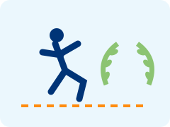
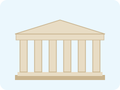
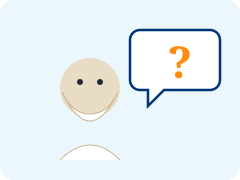
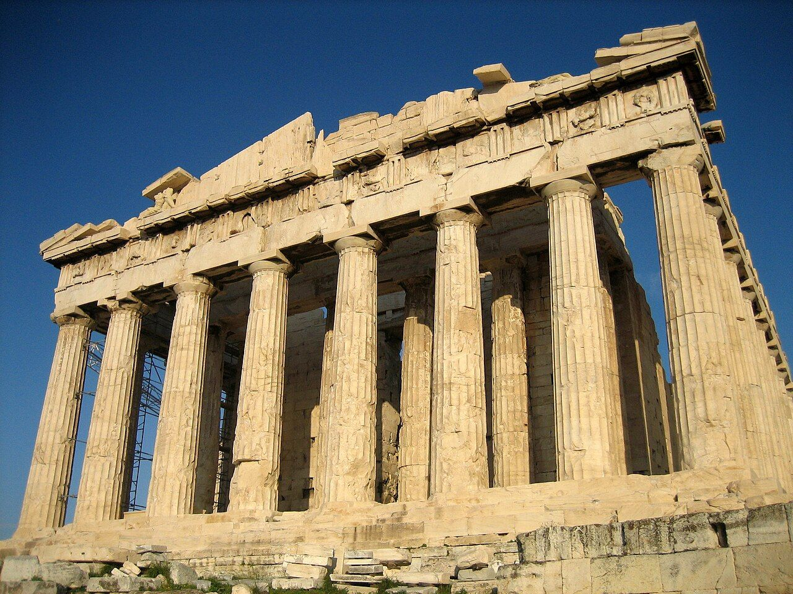
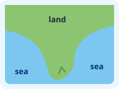
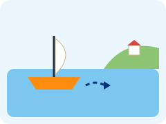
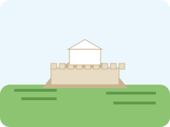
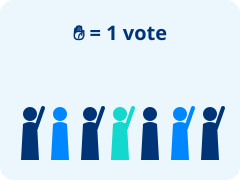
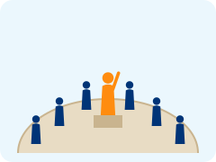

City-States and Democracy
古希腊：城邦与民主 · Ancient Greece, part 1
Ancient Greece on a timeline
- 776 BC · The first recorded Olympic Games

Olympic Games 奥林匹克运动会Sports contests at Olympia every four years, to honor Zeus.History Vocab ↗ at Olympia. - About 508 BC · Athens starts a democracy
 democracy 民主Government where citizens make decisions by voting.History Vocab ↗.
democracy 民主Government where citizens make decisions by voting.History Vocab ↗. - 447–432 BC · The Parthenon temple

temple 神庙A building where people worship a god or goddess.History Vocab ↗ is built in Athens. - 399 BC · The philosopher

philosopher 哲学家A thinker who asks big questions about life and truth.History Vocab ↗ Socrates dies in Athens.

The Parthenon in Athens today, about 2,450 years old.
BC means “before Christ”: the years count down toward year 1. So 776 BC came before 508 BC.
Mountains and sea
- Greece is a rocky peninsula
 peninsula 半岛Land with water on three sides.History Vocab ↗ with many islands.
peninsula 半岛Land with water on three sides.History Vocab ↗ with many islands. - Mountains split the land into small valleys.
- Each valley grew its own city-state
 city-state 城邦A city and the land around it, with its own government.History Vocab ↗: one city and its farms.
city-state 城邦A city and the land around it, with its own government.History Vocab ↗: one city and its farms. - The sea connected them. Greeks traded by ship and started a colony
 colony 殖民地A new town started by people from another city.History Vocab ↗ wherever they found good land.
colony 殖民地A new town started by people from another city.History Vocab ↗ wherever they found good land.

peninsula 半岛
Land with water on three sides.

colony 殖民地
A new town started by people from another city.
Key words: who decides?

city-state 城邦
A city and the land around it, with its own government.
citizen 公民
A member of a city-state with rights, like the right to vote.

democracy 民主
Government where citizens make decisions by voting.

assembly 公民大会
A meeting where citizens discuss and vote on laws.
Athens and Sparta
Athens 雅典
- A democracydemocracy 民主Government where citizens make decisions by voting.History Vocab ↗: citizens
 citizen 公民A member of a city-state with rights, like the right to vote.History Vocab ↗ voted on laws
citizen 公民A member of a city-state with rights, like the right to vote.History Vocab ↗ voted on laws - Famous for plays, art and philosophersphilosopher 哲学家A thinker who asks big questions about life and truth.History Vocab ↗
- A strong navy and lots of trade
- Boys went to school to read, write and speak in public
How democracy worked in Athens
- The assembly

assembly 公民大会A meeting where citizens discuss and vote on laws.History Vocab ↗ met about 40 times a year on a hill called the Pnyx. - Any citizencitizen 公民A member of a city-state with rights, like the right to vote.History Vocab ↗ could stand up and speak.
- Then they voted, usually by raising their hands: votevote 投票To choose officially, for example by raising your hand.History Vocab ↗.
- In court, juries of hundreds of citizens voted with small tokens.
Demos = people, kratos = power. Democracy = power of the people.
Who could vote?
Only a small part of the people living in Athens were citizenscitizen 公民A member of a city-state with rights, like the right to vote.History Vocab ↗.